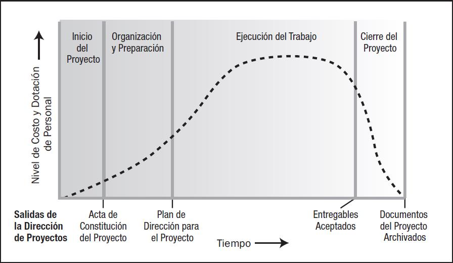

Ciclo de vida del proyecto
El ciclo de vida del proyecto sirve para definir el inicio y el término de un proyecto. Los ciclos de vida del proyecto definen generalmente:
- ¿Qué tipo de trabajo técnico se debe realizar en cada una de las fases?
- ¿Quién debería participar en cada una de las fases?
El siguiente gráfico muestra la estructura básica dentro de la cual se pueden configurar los proyectos dentro del ciclo de vida referido.

Las descripciones de los ciclos de vida del proyecto pueden ser muy generales o muy detalladas.
Hay que tener cuidado al momento de distinguir entre el ciclo de vida del proyecto y el ciclo de vida del producto. Por ejemplo, la realización de proyecto para introducir un nuevo computador al mercado es sólo una fase o etapa del ciclo de vida del producto.